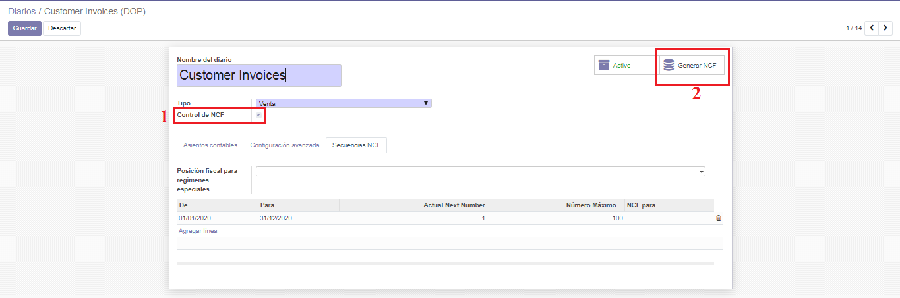
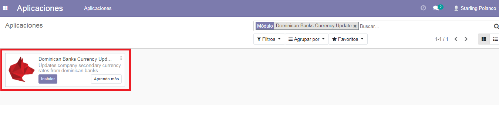
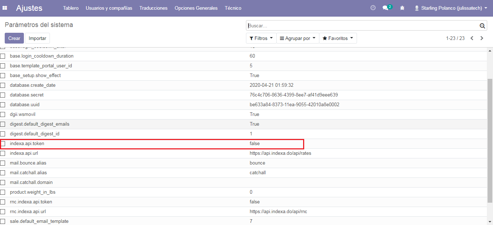

Localizacion Dominicana¶
Este repositorio consolida los módulos utilizados para poder realizar facturación en República Dominicana desde los módulos de Ventas, Compra, Contable y Punto de Ventas.
En esta versión están disponibles los siguientes módulos:
ncf_manager: Este módulo agrega funcionalidades para manejar numero de comprobante fiscal NCF.
Secuencias Preconfiguradas para manejo de todos los NCF.
Validación en tiempo real de comprobantes.
Consulta de tasas de banco en tiempo real.
Creación de contactos por RNC o Cédula.
ncf_pos: Incorpora funcionalidades de facturación con NCF al punto de venta.
WIP: compatibilidad con impresoras fiscales
ncf_sale: Este módulo extiende la funcionalidad del
ncf_managerhacia ventas, para realizar algunas validaciones antes de crear la factura.ncf_purchase: Este módulo extiende la funcionalidad del
ncf_managerhacia compras, Se agrego un nuevo campo Diario de Compras en proveedores si este campo está configurado, las facturas generadas para estos proveedores toman este diario de manera predeterminada.dgii_report: Este módulo extiende las funcionalidades del
ncf_managerintegrando los reportes de declaraciones fiscales.ncf_invoice_template: Este módulo sobre escribe el formato de las facturas para adaptarlo a la Norma General 06-2018 de la DGII.
external_service_addons:
l10n_do_currency_update: Actualiza las tasas de moneda secundaria de la compañía de los bancos dominicanosl10n_do_rnc_validation: Validar RNC / Cédula del servicio externo
Configuracion¶
Instalar los modulos de la localizacion¶
Para esto, ir Aplicaciones y busca ncf. Luego haga clic en Instalar el modulo ncf_manager despues los demas modulos que lo complementan. ncf_invoice_template > ncf_sale > ncf_purchase y por ultimo ncf_pos instale este si requiere
utilizar el punto de venta.
Configurar Compañía¶
Una vez que los módulos están instalados, el primer paso es configurar los datos de su empresa. Además de información básica, un campo clave es (RNC/NIF):

Catalogo de Cuentas¶
Catálogo de Cuentas e Impuestos para República Dominicana, Compatible para Internacionalización con NIIF y alineado a las normas y regulaciones de la Dirección General de Impuestos Internos (DGII).
Catálogo de Cuentas Estándar (alineado a DGII y NIIF)
- Catálogo de Impuestos con la mayoría de Impuestos Preconfigurados
ITBIS para compras y ventas
Retenciones de ITBIS
Retenciones de ISR
- Grupos de Impuestos y Retenciones:
Telecomunicaiones
Proveedores de Materiales de Construcción
Personas Físicas Proveedoras de Servicios
Otros impuestos
En la configuración de Contabilidad desplace a la seccion Localizacion Fiscal vera un paquete prefoconfigurado del catalogo de cuentas dominicano que se le instalara de manera automatica, que están relacionados con el tipo de responsabilidad fiscal de la compañía.

Comprobantes Fiscales¶
En la configuracion de contabilidad selecione la opcion Diario, crear o editar el diario de ventas, escoja el Tipo de Diario > Ventas luego active el Control de NCF luego haga click Generar NCF.
Secuencias generadas de forma automatica.

Declaraciones Fiscales¶
Tasas de Banco Dominicanos¶
Para esto, ir Aplicaciones y buscar Dominican Banks Currency Update. Luego haga clic en Instalar.
Configuraciones¶
En la configuracion de contabilidad desplace hasta la seccion Monedas active la función de Multi-Divisa luego Configure los parámetros de tasas de su banco dominicano como banco, intervalo, base y compensación.

Configuraciones técnicas¶
Debe configurar su clave API para autenticarse con el servicio externo. * Vaya a Configuración> Técnico> Parámetros> Parámetros del sistema * Establezca su clave en el valor de registro de parámetro indexa.api.token
Puede configurar el momento en que se ejecutará su acción de actualización de moneda
Vaya a Configuración> Automatización> Acciones programadas

Haga clic en [TASAS] Actualizar Tasas cron
Establezca su hora en la próxima fecha de ejecución
Notas¶
No cambie ningún otro campo Acciones programadas. Su cron debe ejecutarse diariamente, incluso si sus parámetros Tasas de Banco Dominicano no lo hacen.
Uso¶
Sus Acciones programadas recuperarán sus tasas bancarias de la API dada en los intervalos que configure en su configuración.
Contribuciones¶
Antes de hacer una contribución al repositorio a través de un PR, les recomendamos pasar por el historial de commits de Odoo. donde podrán visualizar el esquema el cual seguirá este repositorio.
También, antes de cualquier publicación deben leer la guía de Contribución de OCA. que es la base de nuestras políticas de contribución.
Antes de poder hacer una contribución, si es la primera que realizas, debes crear un issue explicando el problema e indicando que harás un PR.